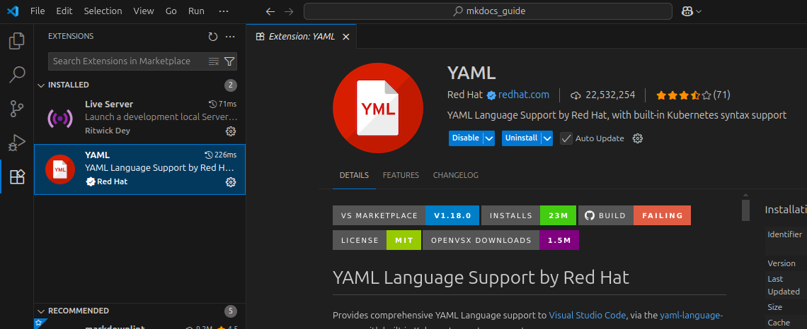
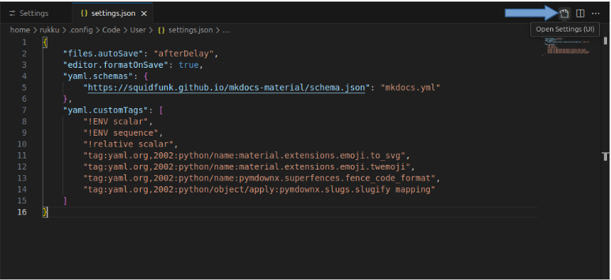

Part 4: Create and Configure the Project
In this section, you will generate your MkDocs project files and configure the core settings that control how your documentation site looks and behaves.
1. Create a New MkDocs Project
With your virtual environment activated, run:
2. Understand the mkdocs.yml File and Project Structure
After running mkdocs new . , two important components are created in your project directory:
mkdocs.yml # The configuration file.
docs/
index.md # The documentation homepage.
... # Other markdown pages, images and other files.
Here's what each of them does:
- docs/: This folder contains your Markdown files. By default, it starts with an index.md, which is the homepage of your documentation site.
- index.md: A sample Markdown file where you can begin writing your content. MkDocs converts this into the homepage of your site.
- mkdocs.yml: This is the main configuration file for your MkDocs project. You'll use it to:
- Set your site name
- Define navigation structure
- Choose and configure the theme
- Add plugins, extensions, and custom settings , etc.
3. Install the YAML Language Support Extension
To enable syntax validation and auto-completion for your mkdocs.yml file, install the YAML Language Support by Red Hat extension in VS Code.
- Open the Extensions view by clicking the Extensions icon on the Activity Bar or by pressing
Ctrl+Shift+X. - Search for YAML.
- Select the YAML Language Support by Red Hat extension and click Install.

4. Enable Schema Validation
Once the extension is installed, you can link MkDocs to the YAML schema for better linting support.
To do this:
- Open
settings.jsonby clicking the gear icon in the bottom left. -
Next, click the document icon in the top right.

-
Add the following at the bottom of the
settings.jsonfile:settings.json{ "yaml.schemas": { "https://squidfunk.github.io/mkdocs-material/schema.json": "mkdocs.yml" }, "yaml.customTags": [ "!ENV scalar", "!ENV sequence", "!relative scalar", "tag:yaml.org,2002:python/name:material.extensions.emoji.to_svg", "tag:yaml.org,2002:python/name:material.extensions.emoji.twemoji", "tag:yaml.org,2002:python/name:pymdownx.superfences.fence_code_format", "tag:yaml.org,2002:python/object/apply:pymdownx.slugs.slugify mapping" ] }
5. Configure the MkDocs Project
Open the newly created mkdocs.yml file in VS Code.
Add the following basic mkdocs.yml configuration:
site_name: My MkDocs Material Documentation
site_url: https://sitename.example
theme:
name: material
Warning
The site_url setting is important because by default, MkDocs assumes your site is at the root of your domain. This is often not the case, especially when using GitHub Pages without a custom domain. For this reason, and because some plugins require it, it's a best practice to always set the site_url.
6. Run the Site Locally
Run the following command to launch a local development server, so you can preview your documentation site in your browser.
This command starts a local development server (usually at http://127.0.0.1:8000).
To view your site,
Ctrl+Clickthe link in your terminal or copy and paste it into your browser—it updates automatically as you make changes.
Tips for Your Workflow
- Stop the server : To stop the server at any time, press
Ctrl+Cin the terminal. - Deactivate the virtual environment: When you are done with your work, deactivate the virtual environment by simply running deactivate.
- Reactivate later: When you return to your project, navigate to the project directory and reactivate the environment with
source venv/bin/activate.
7. Basic Customization
Your new site is now up and running with the Material for MkDocs theme. You can begin customizing your project by modifying the mkdocs.yml file.
For advanced configuration options and detailed customization, you can refer to the Material for MkDocs official documentation.
With your project structure and configuration now in place, you are ready to move on to the next section and publish your site using GitHub Pages.
⬅️ Previous: Installing MkDocs and Material for MkDocs ➡️ Next: Deploying the Site with GitHub Actions